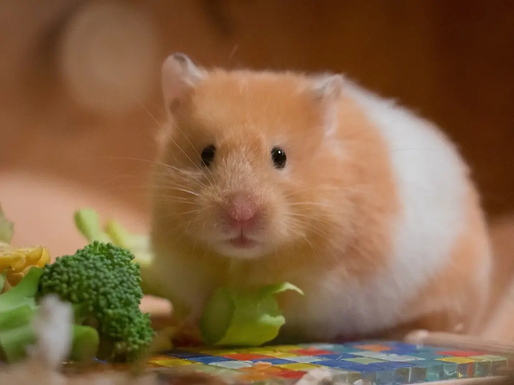

Hamsters, members of the rodent family Cricetidae, are common housepets in America, usually given to children. They are characterized by their short legs, round bodies and dense fur. In folklore, Hamsters are generally associated with hard work and industriousness. In media, they are depicted as using charm and determination to overcome their small size.
